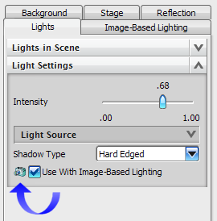

高质量图像概述
使用高质量图像 来为渲染静态图像设置特定的参数，高质量图像也允许您初始化渲染过程，保存或绘制生成的图像。
来为渲染静态图像设置特定的参数，高质量图像也允许您初始化渲染过程，保存或绘制生成的图像。
也可以利用生成的一系列图像来创建动画或者 QuickTime VR 文件(译者注：此文件为 Apple 公司开发的一种音频和视频文件格式)。
很多可视化设置只能在高质量图像中才可见，当您在任何可视化对话框看见一个摄像机的图标 时，表明这个设置或输入的效果只有在高质量图像中才可见。
时，表明这个设置或输入的效果只有在高质量图像中才可见。

位于何处？
|
工具条 |
可视化形状→高质量图像 |
|
菜单 |
视图 → 可视化 → 高质量图像 |
|
快捷菜单 |
Ctrl+Shift+H |